Женя и Никита
Один вечер: с восьми, когда солнце легло вдоль Невского, до полуночи у разведённых мостов. Никита нёс её через дорогу, Женя смеялась так, что я перестал считать кадры.
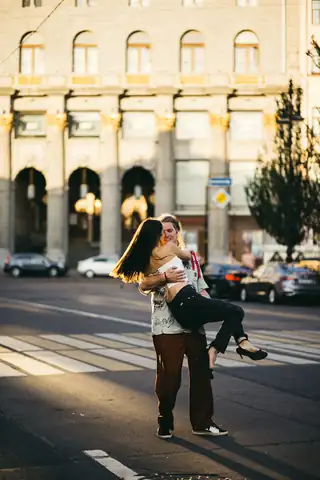
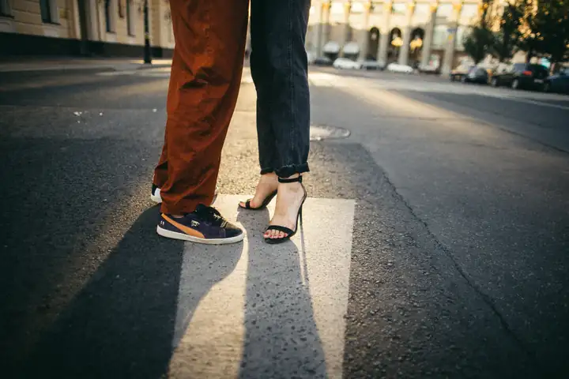
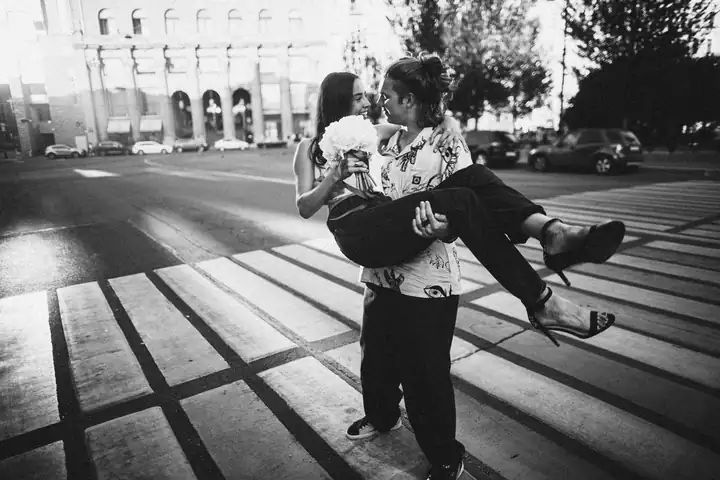
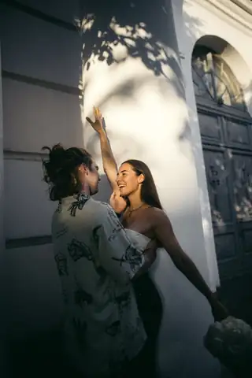
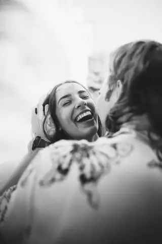
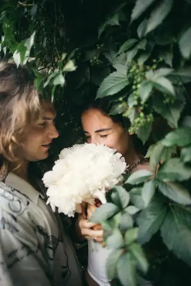
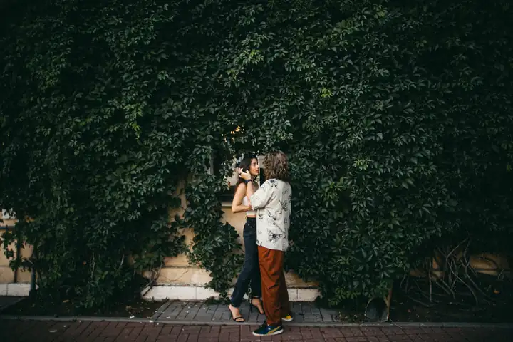
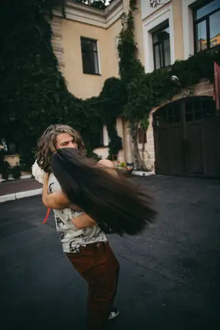
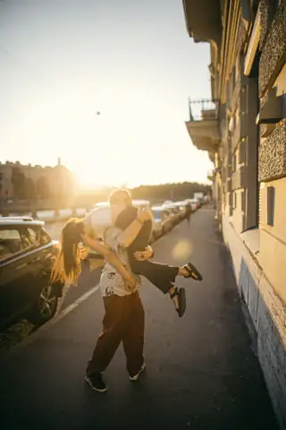
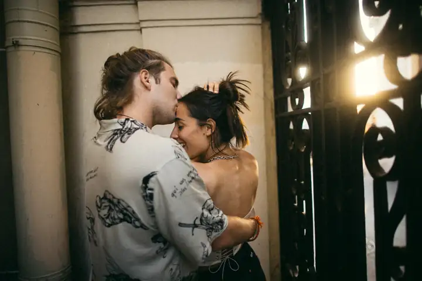
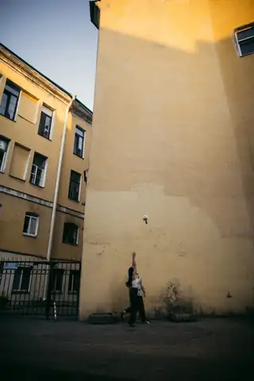
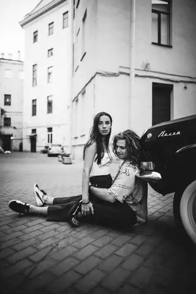
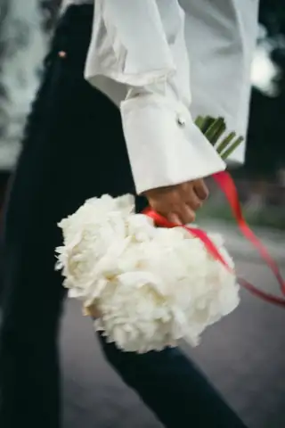
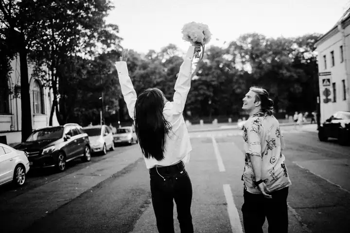
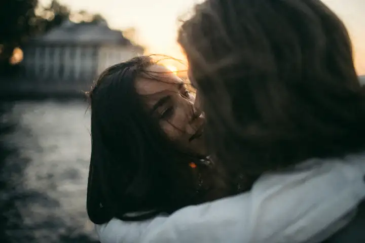
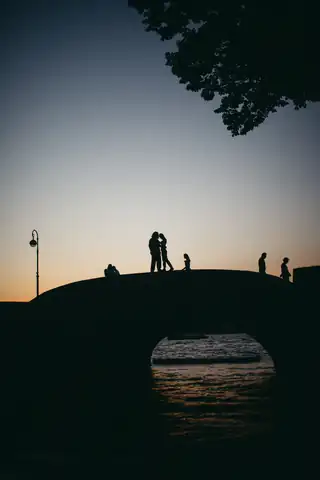
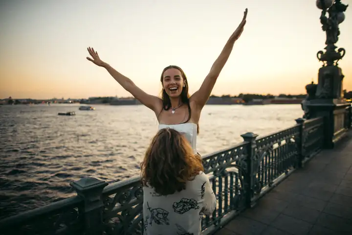
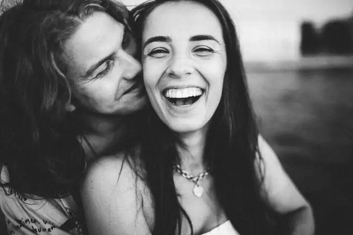
Записаться на съёмку
Беру не больше двух съёмок в неделю и снимаю по всему миру. Напишите — отвечу сам и скажу, свободна ли ваша дата.
Напишите